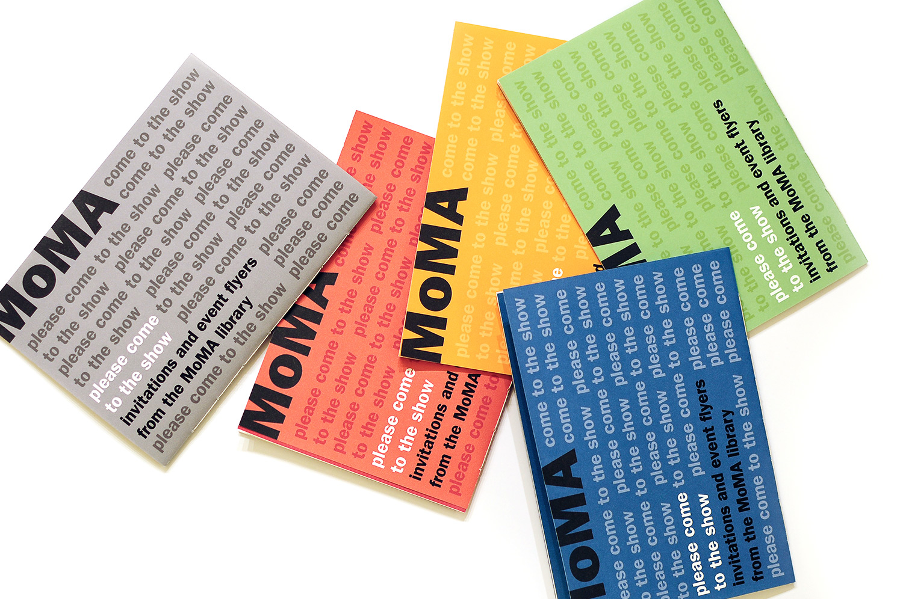
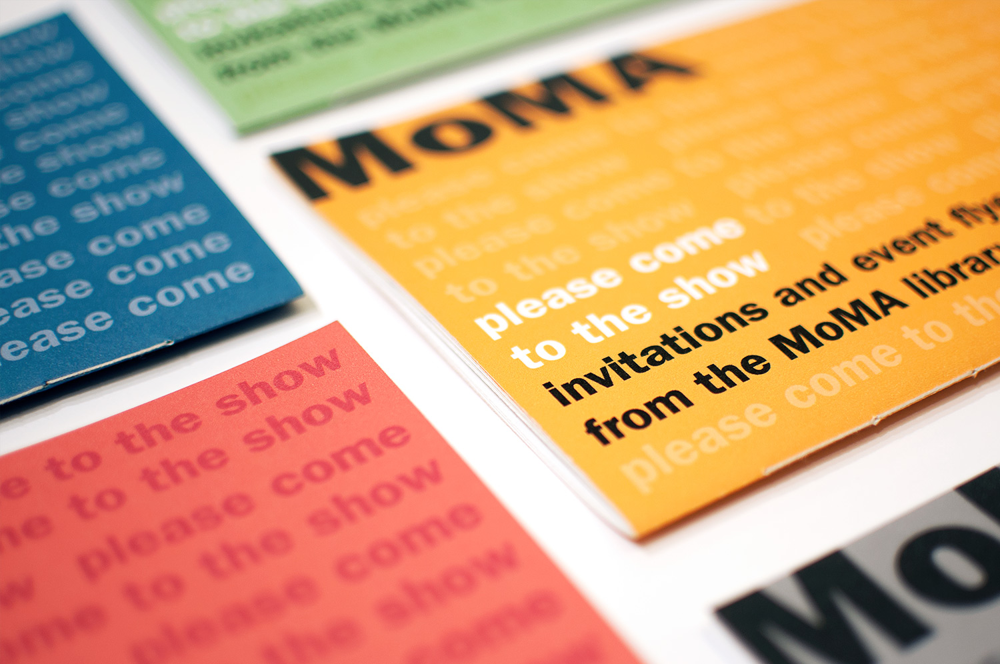
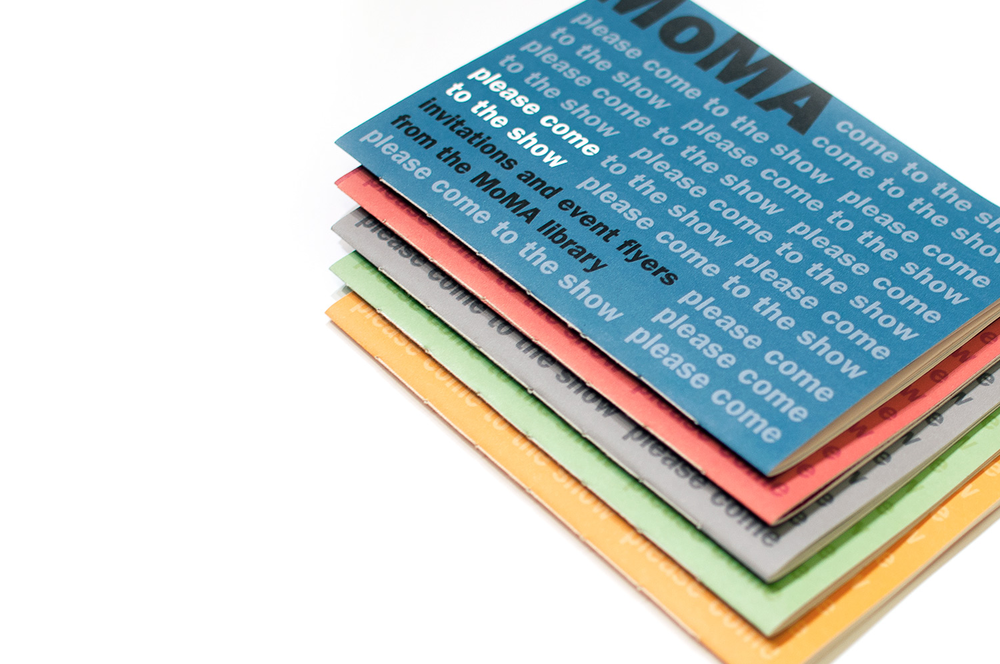
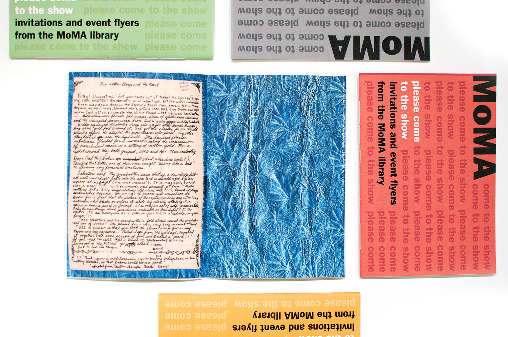
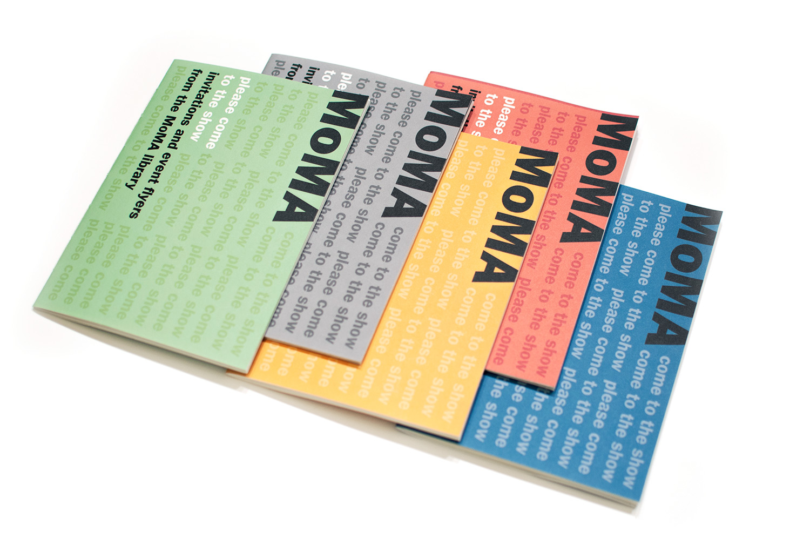
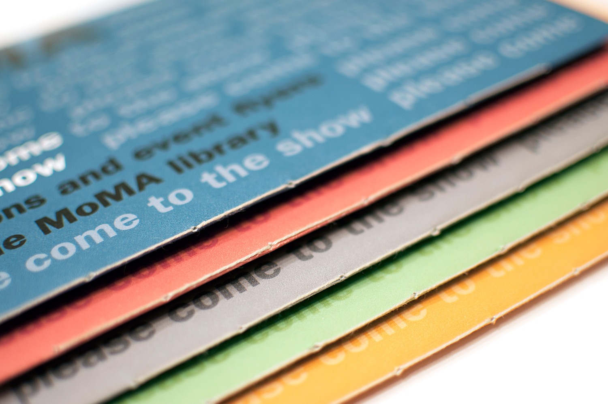

PLEASE COME
TO THE SHOW
catalogue of invitations and event flyers from the MoMA library
This set of takeaway exhibition catalogues was designed for a Parsons class, Book Design and it compiled a series of event flyers and invitations collected for an exhibition that took place at MoMA, from May to September 2013.
For the catalogue content, we had to select the set of invitations, collect the captions for the pieces and also include the introductory texts from MoMA’s pages.
Besides these settings, our full layout creation should follow other rules, such as: A5 for the trim size, single signature, minimum of 30 images and 16 pages and the strict use of Franklin Gothic.
For my project I have decided to categorize them by color and have a different booklet for each.





